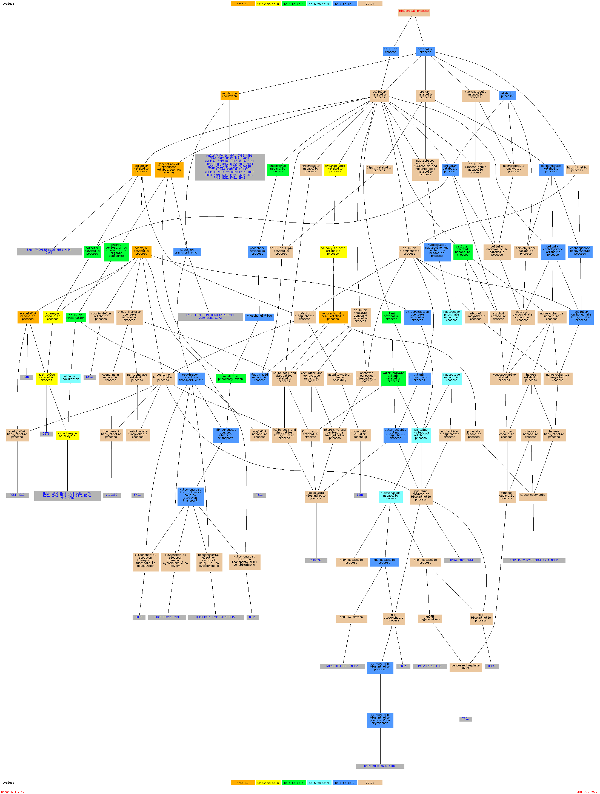

Of your input list, 297 genes are known or unknown but not ambiguous. The total number of genes used to calculate the background distribution of GO terms is 7274.Result Table| Terms from the Process Ontology of gene_association.sgd with p-value <= 0.01 | | Gene Ontology term | Cluster frequency | Genome frequency | Corrected
P-value | FDR | False
Positives | Genes annotated to the term |
|---|
| oxidation reduction | 52 of 297 genes, 17.5% | 310 of 7274 genes, 4.3% | 2.72e-16 | 0.00% | 0.00 | AAD16, YMR041C, YPR1, CYB2, ATP1, COX6, TTR1, BNA4, GRE3, UGA2, JLP1, COR1, KGD1, YNL134C, YMR110C, IDH1, ALD6, ZTA1, GDH2, ALD4, MSC7, MDH2, BNA1, NDE1, ACO1, CCC1, HAP4, IDP2, YJR096W, COX5A, BNA2, RPM2, GLT1, QCR8, LPD1, YPL113C, NDI1, YML087C, CYC1, IDH2, ARA1, CYT1, HYR1, CCP1, FMS1, QCR6, QCR2, GUT2, FAS2, NDE2, FAS1, SDH2 | | coenzyme metabolic process | 34 of 297 genes, 11.4% | 149 of 7274 genes, 2.0% | 4.17e-14 | 0.00% | 0.00 | NDE1, ACS1, YIL083C, PYC2, ACO1, PYC1, YMR289W, BNA4, IDP2, BNA5, ICL1, CIT1, BNA2, NDI1, KGD1, TPI1, IDH1, ALD6, KGD2, IDH2, ACH1, FUM1, FMS1, MLS1, CIT2, TES1, ALD4, GUT2, ACS2, MDH2, LSC2, NDE2, SDH2, BNA1 | | acetyl-CoA metabolic process | 17 of 297 genes, 5.7% | 33 of 7274 genes, 0.5% | 6.73e-13 | 0.00% | 0.00 | ACS1, ACO1, IDP2, ICL1, CIT1, KGD1, IDH1, KGD2, ACH1, IDH2, FUM1, MLS1, CIT2, ACS2, LSC2, MDH2, SDH2 | | cofactor metabolic process | 38 of 297 genes, 12.8% | 212 of 7274 genes, 2.9% | 2.83e-12 | 0.00% | 0.00 | YIL083C, PYC1, BNA4, YNR018W, CIT1, ISA1, KGD1, IDH1, ALD6, ACH1, MLS1, TES1, ALD4, MDH2, LSC2, BNA1, NDE1, ACS1, PYC2, ACO1, HAP4, YMR289W, IDP2, BNA5, ICL1, BNA2, NDI1, TPI1, KGD2, CYC1, IDH2, FUM1, CIT2, FMS1, GUT2, ACS2, NDE2, SDH2 | | monocarboxylic acid metabolic process | 32 of 297 genes, 10.8% | 159 of 7274 genes, 2.2% | 1.66e-11 | 0.00% | 0.00 | FBP1, ACS1, PYC2, CYB2, ACO1, YPL095C, CRC1, UGA3, PYC1, YMR289W, ACC1, IDP2, YAT2, ICL1, YMR210W, FBA1, UGA1, LPD1, UGA2, TPI1, ALD6, ACH1, CAT2, MLS1, CIT2, TES1, ALD4, ATF1, MDH2, FAS2, UBP14, FAS1 | | generation of precursor metabolites and energy | 50 of 297 genes, 16.8% | 385 of 7274 genes, 5.3% | 6.76e-11 | 0.00% | 0.00 | CYB2, BMH2, NCA2, GSY2, ATP1, POR1, COX6, TTR1, CIT1, FBA1, COR1, KGD1, ICS2, ATP16, IDH1, ALD6, PDC2, MLS1, ATP3, ATP14, ATF1, MDH2, LSC2, NDE1, ATP17, ATP2, ACS1, ACO1, HAP4, IDP2, ICL1, COX5A, QCR8, MDM32, NDI1, ATP5, TPI1, PGS1, KGD2, CYC1, IDH2, CYT1, FUM1, CIT2, QCR6, GDB1, GLG2, QCR2, NDE2, SDH2 | | tricarboxylic acid cycle | 14 of 297 genes, 4.7% | 29 of 7274 genes, 0.4% | 7.93e-10 | 0.00% | 0.00 | KGD1, IDH1, ACO1, KGD2, IDH2, FUM1, CIT2, MLS1, IDP2, ICL1, CIT1, MDH2, LSC2, SDH2 | | acetyl-CoA catabolic process | 14 of 297 genes, 4.7% | 29 of 7274 genes, 0.4% | 7.93e-10 | 0.00% | 0.00 | KGD1, IDH1, ACO1, KGD2, IDH2, FUM1, CIT2, MLS1, IDP2, ICL1, CIT1, MDH2, LSC2, SDH2 | | carboxylic acid metabolic process | 48 of 297 genes, 16.2% | 400 of 7274 genes, 5.5% | 4.39e-09 | 0.00% | 0.00 | FBP1, CYB2, YPL095C, CRC1, GCN4, PYC1, ACC1, PUT4, CIT1, YGL196W, YMR210W, FBA1, UGA2, AGX1, KGD1, IDH1, ALD6, ARO9, ACH1, MLS1, TES1, GDH2, ALD4, ATF1, MDH2, UBP14, ACS1, PYC2, ACO1, UGA3, YMR289W, IDP2, BNA5, YAT2, ICL1, CPA2, GLT1, UGA1, LPD1, TPI1, HOM3, KGD2, IDH2, CAT2, FUM1, CIT2, FAS2, FAS1 | | coenzyme catabolic process | 14 of 297 genes, 4.7% | 33 of 7274 genes, 0.5% | 7.22e-09 | 0.00% | 0.00 | KGD1, IDH1, ACO1, KGD2, IDH2, FUM1, CIT2, MLS1, IDP2, ICL1, CIT1, MDH2, LSC2, SDH2 | | organic acid metabolic process | 48 of 297 genes, 16.2% | 406 of 7274 genes, 5.6% | 7.57e-09 | 0.00% | 0.00 | FBP1, CYB2, YPL095C, CRC1, GCN4, PYC1, ACC1, PUT4, CIT1, YGL196W, YMR210W, FBA1, UGA2, AGX1, KGD1, IDH1, ALD6, ARO9, ACH1, MLS1, TES1, GDH2, ALD4, ATF1, MDH2, UBP14, ACS1, PYC2, ACO1, UGA3, YMR289W, IDP2, BNA5, YAT2, ICL1, CPA2, GLT1, UGA1, LPD1, TPI1, HOM3, KGD2, IDH2, CAT2, FUM1, CIT2, FAS2, FAS1 | | cofactor catabolic process | 14 of 297 genes, 4.7% | 34 of 7274 genes, 0.5% | 1.18e-08 | 0.00% | 0.00 | KGD1, IDH1, ACO1, KGD2, IDH2, FUM1, CIT2, MLS1, IDP2, ICL1, CIT1, MDH2, LSC2, SDH2 | | cellular respiration | 28 of 297 genes, 9.4% | 161 of 7274 genes, 2.2% | 3.09e-08 | 0.00% | 0.00 | NDE1, ACO1, NCA2, POR1, COX6, IDP2, ICL1, COX5A, CIT1, QCR8, MDM32, NDI1, COR1, KGD1, IDH1, ALD6, CYC1, KGD2, IDH2, FUM1, CYT1, MLS1, CIT2, QCR6, QCR2, LSC2, MDH2, SDH2 | | energy derivation by oxidation of organic compounds | 39 of 297 genes, 13.1% | 296 of 7274 genes, 4.1% | 3.11e-08 | 0.00% | 0.00 | BMH2, NCA2, GSY2, POR1, COX6, CIT1, COR1, KGD1, ICS2, IDH1, ALD6, PDC2, MLS1, ATF1, MDH2, LSC2, NDE1, ACS1, ACO1, HAP4, IDP2, ICL1, COX5A, QCR8, MDM32, NDI1, PGS1, KGD2, CYC1, IDH2, CYT1, FUM1, CIT2, QCR6, GDB1, GLG2, QCR2, NDE2, SDH2 | | water-soluble vitamin metabolic process | 22 of 297 genes, 7.4% | 103 of 7274 genes, 1.4% | 6.54e-08 | 0.00% | 0.00 | NDE1, SNZ3, PYC2, PYC1, YMR289W, BNA4, YAT2, BNA5, BNA2, THI11, NDI1, TPI1, THI12, ALD6, PDC2, CAT2, SNZ2, THI5, ALD4, GUT2, NDE2, BNA1 | | vitamin metabolic process | 22 of 297 genes, 7.4% | 104 of 7274 genes, 1.4% | 7.99e-08 | 0.00% | 0.00 | NDE1, SNZ3, PYC2, PYC1, YMR289W, BNA4, YAT2, BNA5, BNA2, THI11, NDI1, TPI1, THI12, ALD6, PDC2, CAT2, SNZ2, THI5, ALD4, GUT2, NDE2, BNA1 | | glutamate metabolic process | 10 of 297 genes, 3.4% | 18 of 7274 genes, 0.2% | 2.44e-07 | 0.00% | 0.00 | IDH1, ACO1, IDH2, CIT2, IDP2, GDH2, PUT4, CIT1, GLT1, UGA2 | | cellular alcohol metabolic process | 32 of 297 genes, 10.8% | 228 of 7274 genes, 3.1% | 3.92e-07 | 0.00% | 0.00 | FBP1, YPR1, OSH6, PYC1, YNL156C, GRE3, FBA1, KGD1, VIP1, PDC2, ALD4, ATF1, MSC7, MDH2, UBP14, NDE1, SLI1, PYC2, STD1, YPL272C, XKS1, YJR096W, YAT2, IRE1, YGR263C, YIL042C, TPI1, INO1, GUT2, ACS2, NDE2, GAL3 | | oxidative phosphorylation | 16 of 297 genes, 5.4% | 58 of 7274 genes, 0.8% | 4.54e-07 | 0.00% | 0.00 | ATP17, ATP2, ATP1, COX6, COX5A, QCR8, NDI1, ATP5, ATP16, CYC1, CYT1, QCR6, ATP3, ATP14, QCR2, SDH2 | | phosphorus metabolic process | 39 of 297 genes, 13.1% | 329 of 7274 genes, 4.5% | 7.59e-07 | 0.00% | 0.00 | YKL161C, ATP1, COX6, PHO8, ATP16, KSP1, ATP3, YBR028C, TPK2, ATP14, NDE1, ATP17, LSB6, ATP2, ACO1, YPL137C, CCC1, HAP4, FUS3, YCK1, COX5A, RPM2, IRE1, TPD3, QCR8, YIL042C, MDM32, NDI1, ATP5, CYC1, CYT1, GPB1, QCR6, QCR2, PTP1, YGL059W, PHO13, SDH2, GAL3 | | hydrogen transport | 14 of 297 genes, 4.7% | 47 of 7274 genes, 0.6% | 1.79e-06 | 0.00% | 0.00 | NDE1, ATP5, ATP17, ATP2, ATP16, CYC1, MDM36, ATP1, HAP4, ATP3, YNR018W, ATP14, RPM2, PMA1 | | aerobic respiration | 20 of 297 genes, 6.7% | 102 of 7274 genes, 1.4% | 2.35e-06 | 0.00% | 0.00 | ACO1, NCA2, POR1, IDP2, ICL1, CIT1, QCR8, COR1, KGD1, IDH1, KGD2, IDH2, FUM1, MLS1, CIT2, QCR6, QCR2, LSC2, MDH2, SDH2 | | nucleoside phosphate metabolic process | 26 of 297 genes, 8.8% | 185 of 7274 genes, 2.5% | 1.72e-05 | 0.00% | 0.00 | NDE1, ATP17, ATP2, ADK1, PYC2, PYC1, ATP1, YHR202W, HAP4, BNA4, BNA5, RPM2, BNA2, PMA1, NDI1, ATP5, ISN1, TPI1, ATP16, ALD6, ATP3, ATP14, ALD4, GUT2, NDE2, BNA1 | | nucleotide metabolic process | 26 of 297 genes, 8.8% | 185 of 7274 genes, 2.5% | 1.72e-05 | 0.00% | 0.00 | NDE1, ATP17, ATP2, ADK1, PYC2, PYC1, ATP1, YHR202W, HAP4, BNA4, BNA5, RPM2, BNA2, PMA1, NDI1, ATP5, ISN1, TPI1, ATP16, ALD6, ATP3, ATP14, ALD4, GUT2, NDE2, BNA1 | | nicotinamide metabolic process | 13 of 297 genes, 4.4% | 50 of 7274 genes, 0.7% | 4.12e-05 | 0.00% | 0.00 | NDE1, TPI1, ALD6, PYC2, PYC1, BNA4, BNA5, BNA2, ALD4, GUT2, NDE2, BNA1, NDI1 | | pyridine nucleotide metabolic process | 13 of 297 genes, 4.4% | 52 of 7274 genes, 0.7% | 6.85e-05 | 0.00% | 0.00 | NDE1, TPI1, ALD6, PYC2, PYC1, BNA4, BNA5, BNA2, ALD4, GUT2, NDE2, BNA1, NDI1 | | nucleobase, nucleoside and nucleotide metabolic process | 27 of 297 genes, 9.1% | 215 of 7274 genes, 3.0% | 0.00010 | 0.00% | 0.00 | NDE1, ATP17, ATP2, ADK1, PYC2, PYC1, ATP1, YHR202W, HAP4, BNA4, BNA5, RPM2, BNA2, PMA1, YMR073C, NDI1, ATP5, ISN1, TPI1, ATP16, ALD6, ATP3, ATP14, ALD4, GUT2, NDE2, BNA1 | | phosphate metabolic process | 33 of 297 genes, 11.1% | 306 of 7274 genes, 4.2% | 0.00016 | 0.00% | 0.00 | LSB6, ATP17, ATP2, YKL161C, ATP1, YPL137C, COX6, PHO8, FUS3, YCK1, COX5A, IRE1, TPD3, QCR8, YIL042C, NDI1, ATP5, ATP16, KSP1, CYC1, CYT1, QCR6, GPB1, ATP3, YBR028C, ATP14, TPK2, QCR2, PTP1, PHO13, YGL059W, SDH2, GAL3 | | glutamate biosynthetic process | 7 of 297 genes, 2.4% | 13 of 7274 genes, 0.2% | 0.00016 | 0.00% | 0.00 | IDH1, CIT1, ACO1, IDH2, GLT1, CIT2, IDP2 | | catabolic process | 77 of 297 genes, 25.9% | 1080 of 7274 genes, 14.8% | 0.00017 | 0.00% | 0.00 | HSC82, KAR4, RPT3, PHO8, GRE3, KGD1, IDH1, YKR005C, YTA12, GDH2, RIM20, LSC2, MDH2, MNE1, UBP14, BNA1, ACO1, UGA3, YEA4, RAM1, YJR096W, UBA1, LPD1, SMF1, RRP6, IDH2, GIS3, CCP1, FUM1, FMS1, CIT2, QCR2, CDA1, SSE1, TCM10, DCS1, MMS1, YPR1, RPN14, PBN1, YHR202W, PYC1, PUT4, YSP3, CIT1, FBA1, JLP1, UGA2, COR1, ARO9, MLS1, TES1, UBX6, RPT5, APC1, VTC3, YLR108C, OCT1, YNR068C, YKR089C, XKS1, IDP2, BNA5, TOM1, HAL9, ICL1, UGA1, YMR073C, TPI1, KGD2, CDC34, APE2, GDB1, AFG3, VAM6, SDH2, GAL3 | | cellular process | 252 of 297 genes, 84.8% | 5304 of 7274 genes, 72.9% | 0.00029 | 0.00% | 0.00 | AAD16, CYB2, BMH2, YPL095C, NUP170, CRC1, RPT3, GCN4, YDC1, COX6, BNA4, YGL196W, SSU1, ISA1, GRE3, AGX1, KGD1, ATP16, YTA12, ACH1, MDM38, AGA1, KEL2, GDH2, TPK2, NCE103, RNH203, BNA1, NDE1, ATP17, HIM1, AGA2, STD1, UGA3, YGR046W, CCC1, HAP4, YKL047W, YAT2, ODC1, BNA2, CPA2, YGR263C, UBA1, RRD2, QCR8, RRP6, CYC1, MDM36, MDM34, IDH2, CAT2, ARA1, CCP1, NEM1, FUM1, CDA1, YJL206C, FAR1, FBP1, DCS1, MMS1, YNL165W, OSH6, YKL161C, PYC1, POR1, YHR202W, IDS2, ACC1, YNR018W, PUT4, YSP3, DIA3, YMR210W, PHO86, UGA2, TPS3, COR1, ICS2, ALD6, VIP1, MLS1, ATP3, TES1, YER186C, MON2, YBR028C, ATF1, VTC3, LSB6, ATP2, YNR068C, OCT1, YPL272C, BEM1, XKS1, SHC1, HPA2, IDP2, ECM13, TOM1, WTM1, FUS3, HAL9, YCK1, YMR073C, NDI1, ATP5, SAL1, TCM62, HOM3, AEP1, YHR035W, YPR196W, GDB1, LSP1, TEF2, YGR110W, AFG3, GUT2, ACS2, NDE2, VAM6, SDH2, HSC82, YMR041C, KAR4, YOL157C, GSY2, ATP1, PCF11, PHO8, YNL156C, SEC26, SEC1, RHO1, YIL041W, YHR182W, REB1, IDH1, KSP1, YKR005C, PDC2, SCO2, PRM5, TRL1, THI5, ALD4, MSC7, SDS24, RIM20, MDH2, LSC2, MNE1, UBP14, LST8, SNZ3, ACS1, MIP6, ACO1, RIM4, YPL137C, YMR289W, RAM1, YJR096W, YEA4, PRM8, RIM101, COX5A, HAL1, IRE1, GLT1, PMA1, TPD3, LPD1, SMF1, PEP8, MGM1, GIS3, FMS1, CIT2, INO1, GLG2, QCR2, PTP1, YGL059W, FAS2, FAS1, AFT2, TCM10, SSE1, ADK1, YIL083C, YPR1, RPN14, PBN1, NCA2, GIT1, MNN1, TTR1, MCM2, YCP4, CIT1, SSD1, FBA1, JLP1, YMR110C, THI12, PEX7, ARO9, SNZ2, WAR1, ATP14, UBX6, RPT5, APC1, SLI1, MSN4, YLR108C, PYC2, YKR089C, YDR089W, ASH1, BNA5, ICL1, VPS45, RPM2, THI11, STE3, MDM32, UGA1, YIL042C, PIC2, ISN1, TPI1, PGS1, KGD2, YKL091C, CDC34, YEF3, AHC1, CYT1, APE2, QCR6, GPB1, CHC1, CHS6, PHO13, PET494, GPB2, GAL3 | | phosphorylation | 28 of 297 genes, 9.4% | 244 of 7274 genes, 3.4% | 0.00039 | 0.00% | 0.00 | LSB6, ATP17, ATP2, YKL161C, ATP1, COX6, FUS3, YCK1, COX5A, IRE1, QCR8, YIL042C, NDI1, ATP5, ATP16, KSP1, CYC1, CYT1, GPB1, QCR6, ATP3, YBR028C, ATP14, TPK2, QCR2, YGL059W, SDH2, GAL3 | | ATP synthesis coupled electron transport | 9 of 297 genes, 3.0% | 27 of 7274 genes, 0.4% | 0.00045 | 0.00% | 0.00 | CYC1, CYT1, COX6, QCR6, COX5A, QCR2, QCR8, NDI1, SDH2 | | mitochondrial ATP synthesis coupled electron transport | 9 of 297 genes, 3.0% | 27 of 7274 genes, 0.4% | 0.00045 | 0.00% | 0.00 | CYC1, CYT1, COX6, QCR6, COX5A, QCR2, QCR8, NDI1, SDH2 | | cellular catabolic process | 66 of 297 genes, 22.2% | 901 of 7274 genes, 12.4% | 0.00063 | 0.00% | 0.00 | RPT3, PHO8, GRE3, KGD1, IDH1, YKR005C, GDH2, MDH2, LSC2, MNE1, UBP14, BNA1, ACO1, UGA3, YEA4, RAM1, YJR096W, UBA1, LPD1, SMF1, RRP6, IDH2, GIS3, CCP1, FUM1, FMS1, CIT2, TCM10, MMS1, DCS1, YPR1, RPN14, PBN1, YHR202W, PYC1, PUT4, CIT1, FBA1, JLP1, UGA2, ARO9, MLS1, TES1, UBX6, RPT5, APC1, VTC3, YLR108C, YNR068C, YKR089C, XKS1, IDP2, BNA5, TOM1, ICL1, HAL9, UGA1, YMR073C, TPI1, KGD2, CDC34, APE2, GDB1, VAM6, GAL3, SDH2 | | oxidoreduction coenzyme metabolic process | 13 of 297 genes, 4.4% | 64 of 7274 genes, 0.9% | 0.00091 | 0.00% | 0.00 | NDE1, TPI1, ALD6, PYC2, PYC1, BNA4, BNA5, BNA2, ALD4, GUT2, NDE2, BNA1, NDI1 | | carbohydrate metabolic process | 35 of 297 genes, 11.8% | 362 of 7274 genes, 5.0% | 0.00094 | 0.00% | 0.00 | FBP1, YPR1, YOL157C, BMH2, GSY2, PYC1, MNN1, CIT1, GRE3, FBA1, TPS3, KGD1, MLS1, MDH2, UBP14, PYC2, STD1, SHC1, XKS1, HAP4, IDP2, YJR096W, YEA4, ICL1, YIL042C, TPI1, ARA1, CIT2, CHS6, GDB1, GLG2, GUT2, CDA1, YIR007W, GAL3 | | fatty acid metabolic process | 13 of 297 genes, 4.4% | 65 of 7274 genes, 0.9% | 0.00109 | 0.00% | 0.00 | TPI1, YPL095C, CRC1, UGA3, CAT2, ACC1, TES1, ATF1, FAS2, YMR210W, FAS1, UGA1, UGA2 | | NAD metabolic process | 8 of 297 genes, 2.7% | 23 of 7274 genes, 0.3% | 0.00135 | 0.00% | 0.00 | NDE1, BNA5, BNA2, GUT2, NDE2, BNA4, NDI1, BNA1 | | metabolic process | 222 of 297 genes, 74.7% | 4527 of 7274 genes, 62.2% | 0.00142 | 0.00% | 0.00 | AAD16, CYB2, BMH2, YPL095C, CRC1, RPT3, GCN4, YDC1, COX6, BNA4, YGL196W, SSU1, ISA1, GRE3, AGX1, KGD1, ATP16, YTA12, ACH1, GDH2, TPK2, NCE103, RNH203, BNA1, YIM1, NDE1, ATP17, HIM1, STD1, UGA3, CCC1, HAP4, YKL047W, YAT2, BNA2, CPA2, YGR263C, UBA1, QCR8, YML087C, RRP6, CYC1, IDH2, CAT2, ARA1, CCP1, NEM1, FUM1, CDA1, YJL206C, FAR1, FBP1, DCS1, MMS1, YNL165W, OSH6, YKL161C, PYC1, POR1, YHR202W, YCL047C, ACC1, YNR018W, PUT4, YSP3, YMR210W, PHO86, UGA2, TPS3, COR1, ICS2, ALD6, VIP1, MLS1, ATP3, TES1, YER186C, YBR028C, ATF1, VTC3, LSB6, ATP2, YNR068C, OCT1, YPL272C, XKS1, SHC1, HPA2, IDP2, TOM1, WTM1, FUS3, HAL9, YCK1, YMR073C, NDI1, ATP5, TCM62, HOM3, HYR1, AEP1, YPR196W, GDB1, TEF2, YGR110W, AFG3, GUT2, ACS2, YIR007W, NDE2, VAM6, SDH2, HSC82, YMR041C, KAR4, YOL157C, GSY2, ATP1, PCF11, PHO8, YNL156C, REB1, IDH1, KSP1, YKR005C, PDC2, TRL1, THI5, ALD4, MSC7, RIM20, MDH2, LSC2, UBP14, MNE1, LST8, SNZ3, ACS1, ACO1, RIM4, YPL137C, YMR289W, RAM1, YJR096W, YEA4, RIM101, COX5A, HAL1, IRE1, GLT1, PMA1, TPD3, LPD1, YPL113C, SMF1, GIS3, FMS1, CIT2, INO1, GLG2, QCR2, PTP1, YGL059W, FAS2, FAS1, AFT2, SSE1, TCM10, ADK1, YIL083C, YPR1, RPN14, PBN1, NCA2, MNN1, TTR1, MCM2, YCP4, CIT1, FBA1, JLP1, YNL134C, YMR110C, THI12, ARO9, SNZ2, ZTA1, WAR1, ATP14, UBX6, RPT5, APC1, SLI1, MSN4, YLR108C, PYC2, YKR089C, ASH1, BNA5, ICL1, FUN34, RPM2, THI11, MDM32, YIL042C, UGA1, ISN1, TPI1, PGS1, KGD2, CDC34, YEF3, CYT1, AHC1, APE2, QCR6, GPB1, CHS6, PHO13, PET494, GPB2, GAL3 | | acetate metabolic process | 5 of 297 genes, 1.7% | 7 of 7274 genes, 0.1% | 0.00144 | 0.00% | 0.00 | ACS1, ALD6, ALD4, ATF1, ACH1 | | respiratory electron transport chain | 9 of 297 genes, 3.0% | 31 of 7274 genes, 0.4% | 0.00171 | 0.00% | 0.00 | CYC1, CYT1, COX6, QCR6, COX5A, QCR2, QCR8, NDI1, SDH2 | | 2-oxoglutarate metabolic process | 4 of 297 genes, 1.3% | 4 of 7274 genes, 0.1% | 0.00183 | 0.00% | 0.00 | KGD1, GDH2, KGD2, LPD1 | | cellular carbohydrate metabolic process | 30 of 297 genes, 10.1% | 298 of 7274 genes, 4.1% | 0.00248 | 0.00% | 0.00 | FBP1, YPR1, PYC2, YOL157C, BMH2, STD1, XKS1, GSY2, SHC1, PYC1, MNN1, IDP2, YEA4, YJR096W, ICL1, CIT1, GRE3, FBA1, YIL042C, TPS3, KGD1, TPI1, MLS1, CIT2, CHS6, GDB1, GLG2, MDH2, UBP14, GAL3 | | cellular carbohydrate biosynthetic process | 15 of 297 genes, 5.1% | 93 of 7274 genes, 1.3% | 0.00302 | 0.00% | 0.00 | FBP1, TPI1, PYC2, BMH2, GSY2, SHC1, PYC1, CHS6, GDB1, YEA4, GLG2, MDH2, FBA1, UBP14, TPS3 | | carbohydrate biosynthetic process | 15 of 297 genes, 5.1% | 94 of 7274 genes, 1.3% | 0.00346 | 0.00% | 0.00 | FBP1, TPI1, PYC2, BMH2, GSY2, SHC1, PYC1, CHS6, GDB1, YEA4, GLG2, MDH2, FBA1, UBP14, TPS3 | | vitamin biosynthetic process | 12 of 297 genes, 4.0% | 63 of 7274 genes, 0.9% | 0.00475 | 0.00% | 0.00 | SNZ3, THI12, PDC2, SNZ2, YMR289W, BNA4, BNA5, BNA2, ALD4, THI5, THI11, BNA1 | | water-soluble vitamin biosynthetic process | 12 of 297 genes, 4.0% | 63 of 7274 genes, 0.9% | 0.00475 | 0.00% | 0.00 | SNZ3, THI12, PDC2, SNZ2, YMR289W, BNA4, BNA5, BNA2, ALD4, THI5, THI11, BNA1 | | response to temperature stimulus | 24 of 297 genes, 8.1% | 220 of 7274 genes, 3.0% | 0.00632 | 0.00% | 0.00 | HSC82, MSN4, NCA2, GSY2, PYC1, YDC1, YJR096W, SEC1, YSP3, GRE3, MDM32, UGA1, AGX1, YMR110C, YKL091C, ARA1, PRM5, LSP1, TES1, ALD4, GUT2, NCE103, SDS24, RIM20 | | glutamine family amino acid biosynthetic process | 8 of 297 genes, 2.7% | 28 of 7274 genes, 0.4% | 0.00718 | 0.00% | 0.00 | IDH1, ACO1, IDH2, CIT2, IDP2, CIT1, CPA2, GLT1 | | electron transport chain | 12 of 297 genes, 4.0% | 66 of 7274 genes, 0.9% | 0.00785 | 0.00% | 0.00 | COR1, CYB2, CYC1, CYT1, COX6, TTR1, QCR6, COX5A, QCR2, QCR8, SDH2, NDI1 | | response to abiotic stimulus | 30 of 297 genes, 10.1% | 317 of 7274 genes, 4.4% | 0.00860 | 0.00% | 0.00 | HSC82, MSN4, NCA2, STD1, GSY2, PYC1, YDC1, YJR096W, RIM101, HAL9, SEC1, YSP3, HAL1, RRD2, GRE3, MDM32, UGA1, AGX1, YMR110C, ALD6, YKL091C, ARA1, PRM5, TES1, LSP1, ALD4, GUT2, NCE103, SDS24, RIM20 | | pentose catabolic process | 4 of 297 genes, 1.3% | 5 of 7274 genes, 0.1% | 0.00886 | 0.00% | 0.00 | YJR096W, YPR1, XKS1, GRE3 | | de novo NAD biosynthetic process from tryptophan | 4 of 297 genes, 1.3% | 5 of 7274 genes, 0.1% | 0.00886 | 0.00% | 0.00 | BNA5, BNA2, BNA4, BNA1 | | de novo NAD biosynthetic process | 4 of 297 genes, 1.3% | 5 of 7274 genes, 0.1% | 0.00886 | 0.00% | 0.00 | BNA5, BNA2, BNA4, BNA1 |
Of your input list, 297 genes are known or unknown but not ambiguous. The total number of genes used to calculate the background distribution of GO terms is 7274.
Nodes in the graph are color-coded according to their p-value. Genes in the GO tree are associated with the GO term(s) to which they are directly annotated. To control the graph size, only significant hits with a p-value <= 0.01 and terms descended from them are included.

|
|


{kind=link}
{kind=link}